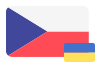
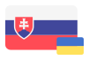
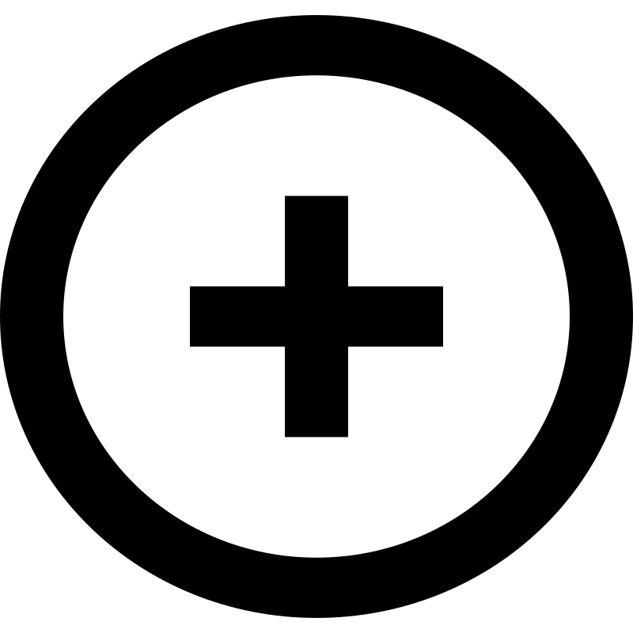

movapp.cz
Вивчай чеську!
Nauč se ukrajinsky!

sk.movapp.eu
Вивчай словацьку!
Nauč sa ukrajinsky!
pl.movapp.eu
Вивчай польську!
Ucz się ukraińskiego!

Create
Start a new
Movapp variant
We are Movapp. My jsme Movapp. Ми Movapp. ❤️🇺🇦
Movapp is a Ukrainian-focused, free, open-source language-learning application developed by volunteers at Česko.Digital.
Movapp je bezplatná open-source aplikace na učení jazyků zameřená na ukrajinštinu vyvíjená dobrovolníky v Česko.Digital.
Movapp - безкоштовний open-source додаток для вивчення української мови, розроблений волонтерами в Česko.Digital.